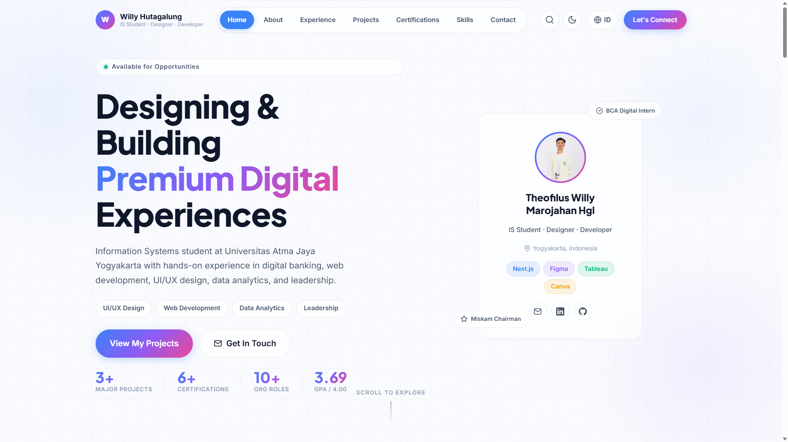
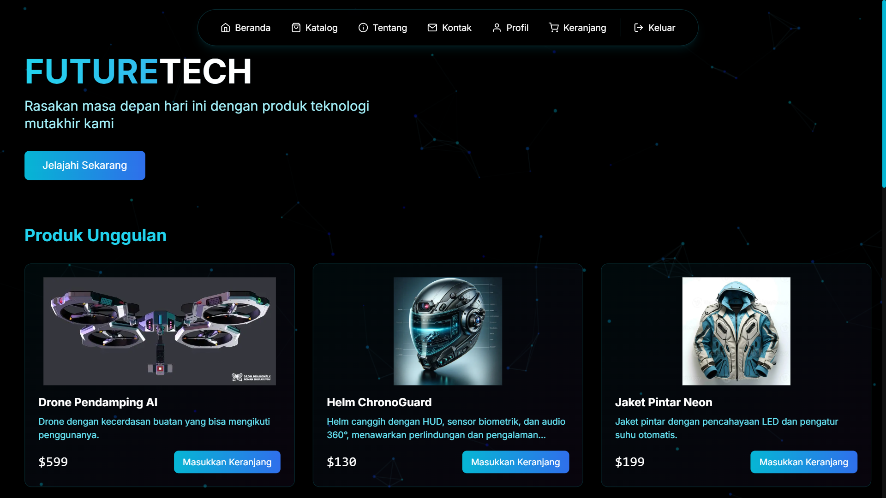
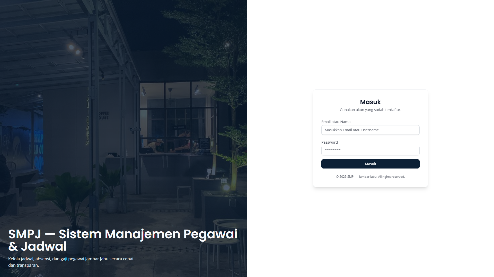

Designing & Building
Premium Digital
|
Information Systems student at Universitas Atma Jaya Yogyakarta with hands-on experience in digital banking, web development, UI/UX design, data analytics, and leadership.
About Me
Passionate About Tech,
Design & Leadership
I'm Theofilus Willy Marojahan Hgl, an Information Systems student at Universitas Atma Jaya Yogyakarta (GPA 3.69/4.00) with a deep passion for digital transformation, business analysis, and user-centered design.
With hands-on experience as a Growth & Acquisition Intern at PT Bank Digital BCA, I've worked in cross-functional teams in one of Indonesia's top digital banking environments, strengthening my analytical thinking and communication skills.
Beyond technical work, I've led organizations, trained students in graphic design, moderated national seminars, and represented my university at national intercultural events. I thrive at the intersection of technology, design, and people.
Design & UI/UX
Creating beautiful, user-centered interfaces with Figma and Canva. From wireframes to polished prototypes.
Web Development
Building responsive web apps with HTML, CSS, JavaScript, and Next.js. Full-stack capability for real-world projects.
Data Analytics
Transforming raw data into insights with Tableau, business intelligence tools, and data visualization techniques.
Leadership
Led organizations, managed events, trained teams, and communicated across multiple stakeholder groups nationally.
Experience
Work & Leadership Journey
Growth & Acquisition Intern
PT Bank Digital BCA (BCA Digital)
Yogyakarta, Indonesia
- Selected as Growth & Acquisition Intern in the Growth & Acquisition Division.
- Supported customer acquisition initiatives and digital banking growth programs.
- Assisted brand activation activities and user engagement campaigns.
- Collaborated with cross-functional teams in operational and business development activities.
- Strengthened communication, analytical thinking, teamwork, and problem-solving skills in a professional banking environment.
Assistant Moderator – Seminar Nasional KONSTELASI 2026
Universitas Atma Jaya Yogyakarta
Yogyakarta, Indonesia
- Assisted moderation activities during Seminar Nasional KONSTELASI 2026.
- Coordinated session flow, speaker preparation, and participant engagement.
- Supported communication between moderators, speakers, and committee members.
- Developed public speaking, event coordination, and stakeholder communication skills.
- Received Certificate of Appreciation as Assistant Moderator.
Speaker / Canva Graphic Design Trainer
Himpunan Mahasiswa Sistem Informasi (HIMSI) UAJY
Giriwoyo, Central Java, Indonesia
- Delivered Canva graphic design training for high school students.
- Developed learning materials covering typography, layout, color theory, and visual communication.
- Facilitated project-based learning activities and practical design exercises.
- Improved participants' digital creativity and design skills.
- Awarded Certificate of Appreciation as training speaker.
University Representative – ISC APTIK 2024
Asosiasi Perguruan Tinggi Katolik Indonesia (APTIK)
Tabanan, Bali, Indonesia
- Represented Universitas Atma Jaya Yogyakarta at Intercultural Student Camp (ISC) APTIK 2024.
- Participated in intercultural discussions and collaborative leadership activities.
- Engaged in programs related to ecology, tourism, youth spirituality, and globalization.
- Developed intercultural communication, adaptability, teamwork, and leadership skills.
- Received Certificate of Participation as university representative.
Chairman – Misa Kampus UAJY
Misa Kampus Universitas Atma Jaya Yogyakarta
Catholic campus ministry · Leadership, community engagement & student development
- Led organizational programs and strategic planning initiatives.
- Coordinated committee activities and cross-functional collaboration.
- Managed internal communication, administration, and event execution.
- Supervised organizational projects and member development activities.
- Strengthened leadership, decision-making, and project management skills.
Coordinator of Secretariat Division
Universitas Atma Jaya Yogyakarta – PKKMB, UKM & Community Fair, Fun Walk Dies Natalis
- Coordinated secretariat and administrative operations across 3 major university events.
- Managed documentation, schedules, and official correspondence.
- Supported committee workflow, project coordination, and collaboration among student organizations.
- Ensured operational effectiveness during event execution.
Social Media & Design Staff – Job Fair UAJY 2025
Universitas Atma Jaya Yogyakarta
- Created promotional content and visual materials for Job Fair UAJY 2025.
- Supported social media campaigns and digital branding initiatives.
- Assisted event documentation and audience engagement activities.
Multiple Steering Committee Roles
Misa Kampus UAJY – Miskam Week 2025 & Action Plan 2025
- Supervised event preparation, execution, and strategic planning.
- Coordinated communication among committee divisions.
- Assisted decision-making and operational planning.
- Supported environmental conservation and community engagement programs.
Coordinator of Publication, Design & Documentation
FORMASI & PSSB Social Service / Mental Health Talkshow 2024
- Coordinated publication, design, and documentation activities.
- Managed visual communication and media materials.
- Supervised documentation during community service programs.
- Designed promotional and publication materials for Mental Health Talkshow 2024.
Projects
Featured Work
Projects that demonstrate my skills in web development, design, and business systems.

Personal Portfolio Website
Developed a responsive personal portfolio website showcasing projects, certifications, leadership experiences, and technical skills using modern web technologies and UI/UX principles.

FutureTech – Futuristic E-Commerce Platform
Built a full-stack e-commerce platform with authentication, dashboard management, product management, order tracking, and responsive UI using Next.js and MongoDB.

SMPJ – Employee Management Information System
Built a web-based employee management system supporting attendance tracking, payroll recap, shift scheduling, productivity monitoring, and performance analysis.
Key Features & Challenges
Outcomes & Impact
Certifications
Professional Achievements
Verified certifications that demonstrate continuous learning and expertise.
Tableau Intermediate
Advanced dashboard development, calculated fields, data blending, filters, parameters, storytelling, and interactive data analysis.
Tableau Fundamentals
Data visualization principles, dashboard creation, chart development, data exploration, and business intelligence concepts.
ISO/IEC 27001:2022 Foundation
Foundation training in Information Security Management Systems (ISMS), cybersecurity awareness, risk management, and ISO/IEC 27001 standards.
Belajar Penggunaan Generative AI – Dicoding
Generative AI training covering AI fundamentals, prompt engineering, ethical AI usage, and practical applications for productivity.
AI Praktis untuk Produktivitas
Practical AI training focused on productivity enhancement using AI tools. Prompt engineering fundamentals, AI-assisted workflows, content generation, and task automation.
Spec-Driven Development dengan Kiro – Dicoding
AI-assisted software development workflows, specification-based development practices, and modern software engineering approaches.
Skills
Technical & Soft Skills
Data & Analytics
Design
Development
Business
Soft Skills
AI & Innovation
Contact
Let's Connect
Open for opportunities, collaborations, and conversations. Reach out anytime!